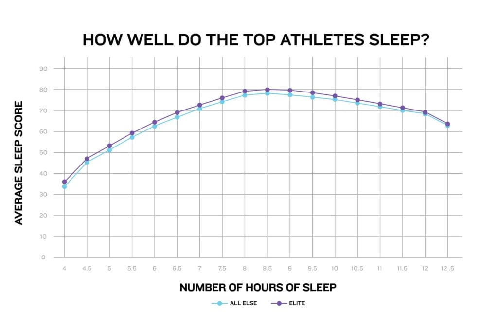

The Sleep Quality Score: What Your Number Actually Means

Your fitness watch gave you a "sleep score" of eighty-two. Do you know what that means?
Probably not. Neither do I. Because every company calculates their score differently. Some weigh deep sleep heavily. Some prioritize consistency. Some just take your heart rate and movement and spit out a random number between one and a hundred that feels right. I've looked under the hood of four different scoring systems. One of them literally just averages your sleep duration — as a percentage of eight hours — and your "restlessness" — number of movements. That's it. That's the whole algorithm. Another one uses seventeen different metrics, but they won't tell you what they are because it's "proprietary." You're paying for a black box that says "trust me."
I don't trust black boxes. That's why I built my own sleep quality score. And I'm going to tell you exactly how it works, what it means, and why you should care — or not care — about your number.
Here's the thing about any score: it's only useful if you know what it's measuring and what to do about it. A score of eighty-two from a fitness watch is useless if you don't know why it's eighty-two. Is it because you slept six hours instead of eight? Because you woke up three times? Because your heart rate was elevated? The watch won't tell you. It'll just show you a green smiley face or a yellow frowny face and leave you to guess.
My score is different. It's based on ten questions that map directly to things you can change. Let me walk you through what those questions are, because understanding the score is more important than the score itself.
The first question is about bedtime consistency. Do you go to bed at the same time every night, within thirty minutes? This is the single biggest predictor of sleep quality — bigger than duration, bigger than environment. Your circadian rhythm craves regularity. If your bedtime varies by more than an hour, your body never knows when to release melatonin. You'll fall asleep fine on some nights and lie awake on others. I used to be terrible at this. My bedtime would drift from 10:30 to 11:30 to 10:45 to midnight. I thought "it's only an hour or so." But that hour was enough to make me feel jet-lagged every Monday. Now I'm within twenty minutes every night. My score went up by twelve points just from that one change.
The second question is about how long it takes you to fall asleep. Less than fifteen minutes is ideal. Fifteen to thirty minutes is okay. More than thirty minutes is a problem. If you're lying awake for forty-five minutes every night, something is wrong. It could be anxiety, caffeine, late-night screens, or your bedtime being misaligned with your circadian rhythm. Don't just accept it. Figure it out.
A guy named David took an hour to fall asleep every night. He thought he had insomnia. We looked at his bedtime: 11 PM. Then we did a simple test: he stayed up until 1 AM for three nights. He fell asleep in ten minutes. Turns out he was a night owl trying to sleep during his circadian forbidden zone. He shifted his bedtime to 12:30 AM and started falling asleep immediately. His "insomnia" vanished.
The third question is about night wakings. How many times do you wake up, and do you remember them? Waking up once or twice is normal. More than that, or staying awake for more than twenty minutes, is not. Night wakings can be caused by sleep apnea, a full bladder, a room that's too warm, or stress. The fix depends on the cause, but tracking the number is the first step.
The fourth question is about morning grogginess. On a scale of one to ten, how terrible do you feel when you first wake up? This is the most subjective question, but it's also the most important. Because the point of sleep is to feel rested. If you're getting eight hours but waking up feeling like a zombie, your sleep quality is low, no matter what the watch says.
I've had clients with perfect "objective" metrics — good duration, few wakings, consistent bedtime — who still felt terrible. Why? Because they were waking up in the middle of deep sleep. Their alarm was set at the wrong time relative to their sleep cycles. That's why I always recommend using a cycle calculator to find your optimal wake-up window.
The fifth through tenth questions cover things like: do you use screens in bed? Do you consume caffeine after 2 PM? Do you drink alcohol within three hours of bedtime? Is your room dark and cool? Do you have a consistent wind-down routine? Do you feel anxious about sleep?
Each question is weighted. Consistency and morning grogginess are weighted highest. Caffeine and alcohol are weighted moderately. Screen use is weighted lower because some people aren't affected by blue light as much — though most are.
When you take the quiz, you get a score from zero to a hundred. Here's what the ranges mean:
Ninety to a hundred: You're doing great. Don't change anything unless you still feel tired. If you feel tired with a score this high, see a doctor. Something else is going on.
Seventy to eighty-nine: You're pretty good, but there's room for improvement. Pick one or two of your lowest-scoring questions and work on those. Don't try to fix everything.
Fifty to sixty-nine: You're in the average range. Most people who come to me score between fifty-five and seventy. You're not a disaster, but you're also not rested. The good news is that small changes will have a big impact.
Below fifty: You need help. Not necessarily medical help, but you need to take sleep seriously. Score below forty? I'd recommend seeing a sleep specialist. Not because you're broken, but because there might be something like sleep apnea or restless leg syndrome that you can't fix on your own.
I took the quiz myself when I first built it. I scored a fifty-four. That was embarrassing. I'm a sleep scientist. I should be in the nineties. But I wasn't. My biggest problems were bedtime inconsistency — I stayed up late on weekends — and morning grogginess — because my alarm was misaligned with my cycles. I fixed those two things over a few months and got my score up to seventy-eight. I've never hit ninety. I have a seven-year-old. I'm fine with seventy-eight.
Now, a word of caution. Your score is not a competition. Do not compare your score to your friend's score or your spouse's score. Different people have different baselines. My husband consistently scores ten points higher than me because he has less anxiety and no kids waking him up. That doesn't mean I'm failing. It means we have different lives.
Also, don't take the quiz every day. That's the same trap as checking your debt every morning. Once a week is plenty. Once a month is fine. The score is meant to help you see trends over time, not to give you a daily grade.
A woman I worked with took the quiz every morning and would spiral if her score dropped by five points. She started sleeping worse because she was anxious about the quiz. I told her to take it once a month. Her sleep improved. Less data, less stress.
Let me show you what a real improvement looks like. A woman named Linda came to me with a score of forty-seven. She was a mess. She slept five hours a night, drank two cups of coffee at 4 PM, scrolled her phone in bed until midnight, and had no consistent bedtime. We made a plan: move coffee cutoff to 12 PM, put the phone on the dresser instead of the bed, and pick a bedtime — 11 PM — and stick to it for two weeks. That's it. Three changes. Two weeks later, her score was fifty-eight. Not amazing, but she felt better. She added blackout curtains and a white noise machine. Score went to sixty-seven. Then she fixed her alarm timing using the cycle calculator. Score went to seventy-four. Over three months, she went from forty-seven to seventy-four. She said, "I didn't know I could feel like this." She wasn't jumping out of bed singing — she's not a Disney princess. But she stopped feeling like she was dragging a corpse through her day.
That's the goal. Not perfection. Just better.
I also want to address something that comes up a lot: "My score is low but I have a newborn / a demanding job / a medical condition. What do I do?"
You do what you can. A low score isn't a moral failure. It's just data. If you have a newborn, your score is going to be terrible. That's normal. Don't stress about it. Just survive. The quiz will still be there in six months. If you have a medical condition that affects sleep — chronic pain, thyroid issues, sleep apnea — your score might always be lower than average. That's okay. Use the score to track whether your treatments are working, not to judge yourself.
The quiz isn't a test. It's a flashlight. It shows you where to look.
Take it now. It takes ninety seconds. Then come back and read the rest.
Done? Good.
Now look at your lowest-scoring questions. Those are your levers. Pick one. Not two, not three. One. Work on that for two weeks. Then take the quiz again. See if it moved. If it did, great. Pick another. If it didn't, try a different approach for the same question.
For example, if your lowest score was on "bedtime consistency," don't just say "I'll go to bed earlier." That's not specific. Instead, set a phone alarm for thirty minutes before your target bedtime. That alarm means "start winding down." Brush your teeth, turn off the TV, put on pajamas. Then set another alarm for your actual bedtime. When that alarm goes off, you get into bed. Do that every night for two weeks. That's a plan.
If your lowest score was on "caffeine," don't try to quit coffee entirely. Just move your last coffee earlier by one hour each week. If you normally have coffee at 3 PM, switch to 2 PM for a week. Then 1 PM. Then 12 PM. That's gradual enough that you won't get withdrawal headaches.
If your lowest score was on "morning grogginess," use the cycle calculator to find a better wake-up time. Most people are waking up in the middle of deep sleep. Shifting your alarm by fifteen to thirty minutes can make a huge difference.
I also want to mention the sleep debt tracker here, because your quality score and your debt are related. High debt usually means low quality, but not always. You can have low debt and still have low quality if your sleep is fragmented. And you can have high debt but decent quality if you're consistently getting good deep sleep but just not enough hours. The two tools work together.
Here's my recommendation: take the quality quiz once a month. Use the debt tracker for one week every quarter. And use the cycle calculator whenever your schedule changes. That's enough data to make good decisions without drowning in numbers.
I see people who track everything — heart rate variability, respiratory rate, skin temperature, sleep stages, morning readiness, evening recovery, lunar phase — I'm kidding, but barely. They spend twenty minutes every morning looking at graphs. That's not helping. That's a hobby.
Sleep tracking is useful when it leads to action. If you're just looking at numbers and feeling anxious, stop. Delete the app. Go back to a paper log. Or no log at all. Your body will tell you if you're rested. You don't need a score to know that.
But if you're the kind of person who likes data, if it motivates you to make changes, then use the quality score. It's free. It's private. And it tells you exactly what to fix.
P.S. My son Leo took the quiz. He's seven. He scored a ninety-one. I asked him how he sleeps so well. He said, "I just close my eyes and then it's morning." I hate him a little bit.